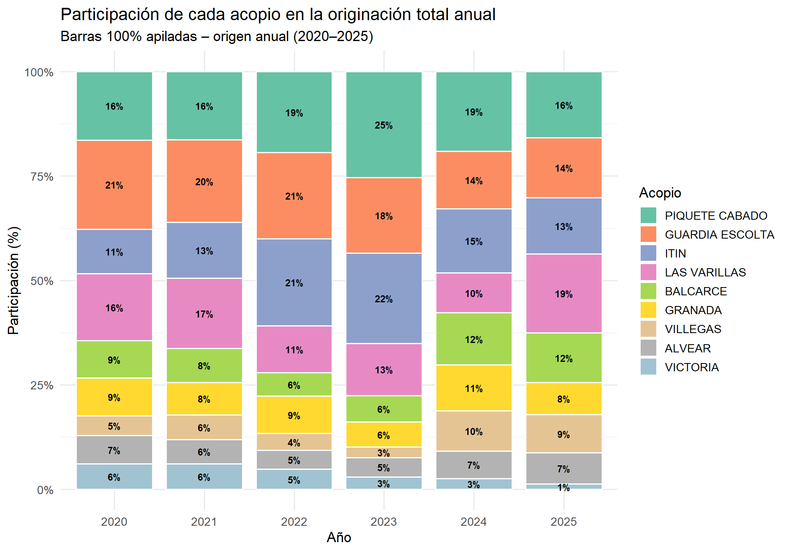

Trabajo práctico final de la materia: Análisis inteligente de datos — Maestría en Ciencia de Datos (2025/2026)
Author
Judith Luna
Análisis de toneladas históricas por acopio
1. Preparación de los datos y consideraciones del negocio
Este informe analiza la evolución de la originación de granos por acopio entre 2020 y 2025. El objetivo es comprender: - cómo se comporta el volumen originado y equivalente, - qué acopios lideran el sistema, - cómo cambia la participación relativa, - y cuáles son los factores operativos y climáticos que explican las variaciones.
1.1 Depuración y selección temporal
Aunque existe información desde 2017, el análisis se restringe al período 2020–2025, debido a que: - antes de 2020 no hay información completa y homogénea, - la estructura actual surge de una fusión de empresas, - desde 2020 la lógica comercial y operativa se vuelve consistente.
Esto asegura comparabilidad entre acopios y confiabilidad en las conclusiones.
1.2 Contexto climático y sanitario (impacto en 2023–2024)
Los años 2023 y 2024 estuvieron fuertemente condicionados por factores externos:
Sequía 2023 → una de las más severas en décadas.
Ola de calor tardía → agravó el estrés de los cultivos.
Chicharrita del maíz (campaña 2023/24) → redujo drásticamente los rindes de maíz.
➡️ Estos fenómenos explican parte de la caída en volúmenes originados y equivalentes durante esos años.
1.3 Significado de “toneladas equivalentes”
En el informe se utilizan dos métricas fundamentales:
- Toneladas originadas: volumen manejado comercialmente.
- Toneladas equivalentes: volumen que ingresa físicamente a planta.
La comparación permite identificar cierres, limitaciones operativas y uso real de la capacidad instalada.
1.4 Particularidades de ciertos acopios
Para interpretar correctamente los resultados, se destacan tres casos: - Villegas: oficina comercial → equivalentes = 0.
- Victoria: ya no pertenece al grupo → actividad decreciente hasta desaparecer.
- Alvear y Balcarce: en obras 2023–2024 → equivalentes bajos por causas operativas.
Code
library(tidyverse)library(here)library(scales)library(RColorBrewer)library(plotly)# 1) Lectura del dataset procesadotoneladas <- readr::read_csv( here::here("Datos_procesados", "toneladas_limpias.csv"),show_col_types =FALSE)# 2) Nos quedamos solo con 2020–2025toneladas <- toneladas |> dplyr::filter(anio >=2020)# 3) Enriquecemos con nombres de mes y etiqueta año-mestoneladas <- toneladas |> dplyr::mutate(mes_nombre =factor( mes,levels =1:12,labels =c("Ene","Feb","Mar","Abr","May","Jun","Jul","Ago","Sep","Oct","Nov","Dic") ),anio_mes =paste(anio, sprintf("%02d", mes), sep ="-") )
2. Panorama general por acopio (Ranking histórico)
En esta sección se muestra el ranking histórico de toneladas originadas por acopio en el período 2020–2025.
La idea es tener una foto rápida de: - qué acopios lideran en volumen, - cuáles se ubican en un segundo escalón, - y quiénes tienen participación más acotada.
Conclusiones
Guardia Escolta y Piquete Cabado lideran el sistema.
Itín y Las Varillas conforman un segundo escalón robusto.
Alvear, Villegas y Victoria muestran menor peso relativo.
Este gráfico permite ver la estructura global del negocio.
3. Relación entre toneladas originadas y equivalentes
Warning: The `label.size` argument of `geom_label()` is deprecated as of ggplot2 3.5.0.
ℹ Please use the `linewidth` argument instead.
Conclusiones — Porción equivalente dentro de la originación total
El gráfico permite comparar cuánta parte de la mercadería originada por cada acopio ingresa efectivamente a planta. A partir de la lectura se destacan los siguientes puntos:
3.1. Acopios con mayor eficiencia de conversión (altas proporciones equivalentes)
Balcarce (58%), Itín (45%), Alvear (46%) y Granada (48%) muestran una relación equivalente/originado muy alta.
Esto indica que gran parte de su actividad comercial está directamente vinculada a operaciones físicas dentro de la planta.
3.2 Acopios con grandes volúmenes totales pero proporciones equivalentes moderadas
Piquete Cabado (37%) y Guardia Escolta (43%) tienen los volúmenes más altos del sistema, pero no toda su originación pasa por planta.
Esto es habitual en acopios de gran escala que operan tanto con descarga propia como con desvíos logísticos o comerciales.
3.3 Las Varillas muestra una proporción equivalente más baja (28%)
Si bien es uno de los acopios con mayor volumen originado en el sistema, una parte importante de su comercialización no ingresa físicamente a planta.
Esto puede deberse a mayor actividad comercial indirecta o a restricciones operativas.
3.4 Villegas: caso estructural (0%)
Su proporción equivalente es 0% porque no posee acopio físico, sino que funciona únicamente como oficina comercial.
Su volumen es 100% originación y 0% operación física, situación totalmente esperable.
3.5 Victoria: actividad en retracción
Presenta proporciones equivalentes bajas (33%) y volúmenes decrecientes.
Esto coincide con su salida progresiva del sistema y explica la baja conversión operativa.
3.6 Patrón general del sistema
Los acopios con planta activa y estable (Balcarce, Itín, Granada, Alvear) tienden a tener altos porcentajes equivalentes.
Los acopios grandes y con mucho movimiento regional (Piquete Cabado, Guardia Escolta, Las Varillas) muestran mayor mezcla entre originación y desvíos logísticos.
Los casos especiales (Villegas y Victoria) se explican por estructura y no por desempeño.
En conjunto, esta visual permite entender de manera inmediata el rol operativo de cada acopio, diferenciando entre: - actividad comercial pura, - operación física real en planta, - efectos estructurales, - y particularidades de cada zona.
4. Tendencia mensual por acopio
En esta sección analizamos la evolución mensual de toneladas originadas y equivalentes para cada acopio entre 2020 y 2025.
Este análisis permite identificar:
patrones estacionales de originación,
comportamientos distintos según región,
efectos operativos (cierres, reaperturas, cambios de capacidad),
y diferencias entre lo que se origina y lo que ingresa a planta.
Al visualizar ambas curvas juntas, se puede ver claramente qué acopios mantienen una relación estable entre originación y operación física, y dónde aparecen desvíos relevantes.
Conclusiones
Piquete Cabado, Guardia Escolta e Itín muestran estacionalidad marcada.
Balcarce y Alvear reflejan los períodos de cierre.
Las Varillas mantiene un comportamiento estable y creciente.
Villegas solo muestra originación.
Victoria desaparece progresivamente del sistema.
5. Comparación anual por acopio
Luego de ver la tendencia mensual, ahora analizamos cómo evoluciona la originación anual en cada acopio.
Este gráfico permite comparar rápidamente:
aumentos o caídas interanuales,
cómo se redistribuye el volumen entre acopios,
qué tendencias se consolidan en el tiempo,
estabilidad o volatilidad en el volumen,
efectos operativos (cierres y reaperturas),
y diferencias estructurales entre acopios.
Tabla anual de volúmenes
A continuación se presenta la tabla con las toneladas originadas por acopio, año por año, expresadas en toneladas:
Code
#| label: tabla-volumen-anual#| echo: false# 1) Tabla numérica base (TONELADAS, sin formatear)tabla_anual <- toneladas |> dplyr::group_by(acopio, anio) |> dplyr::summarise(orig_tn_anio =sum(orig_mes, na.rm =TRUE),.groups ="drop" ) |> tidyr::pivot_wider(names_from = anio,values_from = orig_tn_anio ) |> dplyr::arrange(desc(`2025`)) # ordeno por el año más reciente# 2) Versión PARA MOSTRARtabla_anual_miles_tabla <- tabla_anual |> dplyr::mutate( dplyr::across(-acopio,~ .x /1000# pasamos a miles de toneladas ) ) |> dplyr::mutate( dplyr::across(-acopio,~ scales::number( .x,accuracy =0.1,big.mark =".",decimal.mark ="," ) ) )knitr::kable( tabla_anual_miles_tabla,col.names =c("Acopio", "2020", "2021", "2022", "2023", "2024", "2025"),caption ="Toneladas originadas por acopio (2020–2025) – valores en miles de toneladas")
Toneladas originadas por acopio (2020–2025) – valores en miles de toneladas
Acopio
2020
2021
2022
2023
2024
2025
LAS VARILLAS
190,8
193,4
104,7
78,7
90,9
219,9
PIQUETE CABADO
194,2
187,8
179,5
158,8
181,9
184,2
GUARDIA ESCOLTA
253,2
227,6
191,6
112,9
131,6
167,0
ITIN
125,3
153,6
193,4
135,4
146,2
156,3
BALCARCE
106,0
93,9
51,6
39,3
119,1
137,5
VILLEGAS
56,9
68,2
37,0
16,0
91,1
106,4
GRANADA
106,3
89,1
83,5
37,5
105,0
89,8
ALVEAR
79,6
66,3
42,3
28,6
63,3
86,7
VICTORIA
72,8
70,8
44,7
18,9
24,5
14,9
En el siguiente punto podemos ver esta informacion graficamente, donde cada recuadro representa un acopio, y las barras muestran su volumen total originado año a año.
Conclusiones principales
5.1. 2025 fue un año excepcional: varios acopios alcanzaron su mejor registro histórico
Los valores muestran que 2025 es el mejor año de la serie 2020–2025 para muchos acopios, lo que marca una tendencia fuerte al alza en el negocio:
LAS VARILLAS alcanza su máximo histórico: 219.907 tn.
PIQUETE CABADO también llega a su mejor valor reciente: 184.169 tn.
VILLEGAS, aun sin acopio físico, registra su mayor volumen histórico: 106.370 tn.
ALVEAR, tras la reapertura, logra 86.712 tn, su mejor nivel en la serie.
Este comportamiento señala un fortalecimiento generalizado en la originación.
5.2. Acopios con crecimiento sostenido en los últimos 3 años (2023 → 2024 → 2025)
Se observan trayectorias de crecimiento claras:
LAS VARILLAS crece de manera acelerada: 78.685 → 90.855 → 219.907.
VILLEGAS sorprende con su evolución: 16.035 → 91.148 → 106.370.
PIQUETE CABADO muestra una recuperación sólida en 2024–2025.
Estos acopios reflejan no solo recuperación, sino expansión comercial real.
5.3. Impacto operativo de los cierres (2023–2024)
Es fundamental interpretar correctamente los descensos:
ALVEAR y BALCARCE estuvieron en obras durante 2023–2024.
BALCARCE retoma actividad y sube fuerte en 2025 (137.545 tn).
ALVEAR vuelve recién en 2025, logrando su mejor año.
Los descensos no representan pérdida comercial, sino indisponibilidad operativa.
5.4. Acopios líderes que sostienen su posición
Más allá de los cambios anuales, se mantienen como referentes:
GUARDIA ESCOLTA y PIQUETE CABADO, pilares fuertes del sistema.
ITIN, con volúmenes estables y altos que consolidan su rol estratégico.
5.5. Acopios estructuralmente menores
VICTORIA muestra niveles bajos porque ya no pertenece al grupo.
VILLEGAS, aunque sin acopio físico, logra un crecimiento destacable y consistente.
Resumen
2025 marca un año récord para varios acopios claves.
Las tendencias de los últimos 3 años indican un fortalecimiento sostenido del sistema.
Las caídas de 2023–2024 se explican por factores operativos, no comerciales.
El mapa productivo se reorganiza entre acopios que crecen, otros que se recuperan y algunos que salen del sistema.
6. Evolución del ranking anual por acopio
Para complementar la comparación año a año, es útil visualizar cómo cambia el ranking de los acopios en términos de toneladas originadas entre 2020 y 2025.
Este gráfico permite ver de manera muy clara:
Quiénes se mantienen en los primeros puestos.
Qué acopios muestran mejoras o deterioros en su posición relativa.
Cómo impactan ciertos eventos operativos (cierres, fusiones, asignaciones comerciales) en la performance anual.
Conclusiones
El gráfico muestra la evolución del ranking de originación (1 = mayor volumen) para cada acopio entre 2020 y 2025. No estamos mirando toneladas, sino posición relativa: quién gana, quién sostiene y quién pierde terreno.
Análisis resumido del ranking anual de originación (2020–2025)
El gráfico muestra tres comportamientos bien definidos entre los acopios:
6.1. Liderazgo claro:
Piquete Cabado, Guardia Escolta, Itín y Las Varillas dominan sistemáticamente las primeras posiciones. Dentro de este grupo, Piquete Cabado se consolida en la punta en los últimos años, e Itín tiene un período muy fuerte entre 2022 y 2024. Las Varillas destaca por recuperarse del bache de 2024 y lograr el 1° puesto en 2025, su mejor resultado del período.
6.2. Segmento medio estable:
Balcarce y Granada se mueven de forma pareja entre los puestos 4° y 7°, con leves mejoras o retrocesos según el año, pero sin saltos relevantes hacia el liderazgo.
6.3. Segmento rezagado:
Villegas, Alvear y Victoria permanecen mayormente en las últimas posiciones. Villegas es el único de este grupo que muestra una mejora sostenida en 2024–2025.
Conclusión:
La serie refleja estabilidad en los liderazgos, algunas recuperaciones puntuales y movimientos moderados en la mitad de la tabla. 2025 se destaca porque Las Varillas alcanza el 1° puesto, y porque Villegas mejora su posición histórica.
7. Podio anual de originación
El siguiente gráfico muestra el “podio” de los tres acopios con mayor volumen originado en cada año.
Esto permite ver no solo quién gana, sino también cómo cambia el top 3 en el tiempo.
Los valores están expresados en miles de toneladas para facilitar la lectura.
Conclusiones — Podio anual de originación (Top 3 por año)
El gráfico del podio anual permite ver rápidamente quiénes lideran la originación cada año, qué acopios ganan terreno, cuáles pierden participación y cómo evoluciona la competencia entre los acopios principales.
A partir de los datos 2020–2025, se observan cuatro conclusiones centrales:
7.1 Liderazgo consistente de un grupo reducido de acopios
Entre 2020 y 2025, los acopios Piquete Cabado, Guardia Escolta, Itín y Las Varillas conforman el núcleo que domina los primeros puestos todos los años.
Guardia Escolta lidera en 2020 y vuelve al podio en casi todos los años posteriores.
Piquete Cabado sostiene un rendimiento muy estable y aparece dentro del top 3 de manera recurrente.
Itín muestra un ciclo fuerte, especialmente en 2021 y 2022.
Las Varillas gana protagonismo y se transforma en un líder claro hacia el final del período.
Este grupo explica la mayor parte de la variación en los primeros puestos y concentra el volumen competitivo del sistema.
7.2 2025 marca un punto de quiebre: Las Varillas toma el liderazgo
El año 2025 muestra una reconfiguración importante en el podio, donde Las Varillas alcanza el primer lugar con 220 mil toneladas, su mejor registro histórico dentro del período analizado.
El salto de Las Varillas en 2025 es uno de los hechos más llamativos de toda la serie.
7.3 Los valores absolutos del podio crecen nuevamente en 2025
Comparando los máximos por año:
2020 – 253k (Guardia Escolta)
2021 – 228k (Guardia Escolta)
2022 – 193k (Itín)
2023 – 159k (Piquete Cabado)
2024 – 182k (Piquete Cabado)
2025 – 220k (Las Varillas)
Esto muestra que 2025 recupera niveles de pico, después de un 2023–2024 más moderado.
En términos comerciales, 2025 representa un año fuerte por:
la recuperación de acopios que estaban en obras,
una mayor actividad general del sistema,
la reactivación en varias zonas de influencia.
8. Toneladas originadas por acopio (barras apiladas, miles)
El gráfico muestra la evolución del volumen originado por cada acopio a lo largo del período 2020–2025, expresado en miles de toneladas.
Permite comparar tamaños relativos, detectar tendencias de crecimiento o caída y entender el rol comercial de cada acopio dentro del sistema.
Conclusiones principales
8.1. Piquete Cabado, Guardia Escolta e Itín conforman el grupo de mayor volumen absoluto
8.2. Las Varillas se convierte en uno de los acopios más dinámicos y con mayor crecimiento
8.3. Balcarce y Alvear muestran claramente el impacto de las obras operativas (2023–2024)
8.4. Villegas crece de forma muy marcada a pesar de no tener planta física
8.5. Victoria va perdiendo relevancia hasta casi desaparecer
El total del sistema crece fuertemente en 2025
Al observar la suma de barras por acopio (y por año), se nota:
2023 es un año flojo por obras.
2024 empieza a recomponerse.
2025 es el mejor año de todo el período, con varios acopios en máximos históricos.
Esto sugiere un incremento global en:
capacidad comercial
recuperación operativa
disponibilidad de plantas
y posiblemente mejores condiciones de mercado o cosecha.
9. Participación porcentual de cada año dentro de cada acopio
Aquí se muestra, para cada acopio, qué porcentaje de su volumen total corresponde a cada año.
Es una vista 100% apilada, útil para ver la distribución interna de cada acopio, independientemente de su tamaño absoluto.
A partir del análisis se destacan los siguientes puntos:
9.1. 2025 es el año con mayor peso para la mayoría de los acopios
Para casi todos los acopios, 2025 representa entre 17% y 28% de su originación total del período. Esto confirma que 2025 fue un año excepcionalmente alto en términos de actividad comercial para el sistema.
9.2. 2023 y 2024 muestran participaciones bajas de manera generalizada
En la mayoría de los acopios, los años 2023 y 2024 explican una porción reducida de su total histórico. Este comportamiento es coherente con factores externos que afectaron al sector:
- sequía 2023,
ola de calor tardía,
- impacto de la chicharrita en la campaña 2023/24.
Estos eventos redujeron la disponibilidad de grano y el flujo operativo en todo el mercado.
9.3. Acopios con distribución equilibrada a lo largo del período
Piquete Cabado, Guardia Escolta e Itín presentan una distribución bastante pareja entre los seis años analizados. Esto indica estabilidad comercial y menor dependencia de un solo año.
9.4. Las Varillas: fuerte peso en los extremos del período
Las Varillas muestra dos momentos muy marcados: - 2020–2021 explican una porción significativa de su historia, - 2025 representa su valor más alto (25% del total).
Los años intermedios tienen menor peso, lo que revela fluctuaciones pero también un crecimiento acelerado hacia el final.
9.5. Villegas: crecimiento sostenido y concentrado en los últimos años
Villegas —a pesar de ser solo oficina comercial— muestra un cambio estructural: - baja participación en 2020–2021, - fuerte incremento en 2024–2025 (24% y 28%).
Esto refleja una expansión comercial notable.
9.6. Victoria: pérdida progresiva de relevancia
Victoria concentra más del 60% de su volumen histórico en 2020–2021. Su participación cae fuertemente en 2023–2025, lo cual coincide con su salida del sistema.
Resumen clave
2025 tiene el mayor peso relativo en la mayoría de los acopios.
2023–2024 reflejan caídas generalizadas por factores climáticos y sanitarios.
Algunos acopios mantienen una distribución estable en el tiempo.
Las Varillas y Villegas muestran crecimiento fuerte en los últimos años.
Victoria pierde su relevancia progresivamente.
10. Participación de cada acopio dentro del total anual del sistema
Este gráfico es complementario al anterior: en vez de mostrar cómo se compone cada acopio, muestra cómo se compone el total de cada año.
Permite identificar:
quién gana participación,
quién pierde,
cómo evoluciona la distribución total del negocio.

Conclusiones — Participación de cada acopio en la originación total anual
Barras 100% apiladas (2020–2025)
Este gráfico muestra cómo se reparte el total originado del sistema entre los distintos acopios para cada año. A diferencia de otros gráficos, acá el foco no está en cuánto origina cada acopio, sino en qué proporción del mercado total ocupa cada uno.
A partir del análisis se destacan los siguientes puntos:
1. Cuatro acopios concentran la mayor parte del mercado en todos los años
PIQUETE CABADO, GUARDIA ESCOLTA, ITÍN y LAS VARILLAS explican entre 58% y 70% del total anual según el año. Aunque varían en posición relativa, el liderazgo del sistema siempre está en manos de este mismo grupo.
2. LAS VARILLAS gana participación de forma muy marcada en 2025
Su participación crece de: - 16% en 2020, - 17% en 2021, - 11%–13% entre 2022 y 2023, - 10% en 2024, - 19% en 2025 (su valor más alto del período).
Esto confirma su fuerte crecimiento comercial y su consolidación dentro del sistema.
3. PIQUETE CABADO y GUARDIA ESCOLTA se mantienen como referentes del mercado
Ambos acopios muestran participaciones relativamente estables: - PIQUETE CABADO se mueve entre 16% y 25% según el año. - GUARDIA ESCOLTA tiene entre 14% y 21%.
Pese a las variaciones interanuales, su peso dentro del sistema sigue siendo sostenidamente alto.
4. ITÍN presenta oscilaciones, pero siempre dentro del segmento principal
ITÍN se mantiene entre 11% y 22%, con su máxima participación en 2023. Es un acopio con rol consistente en el tablero general, aunque más sensible a las fluctuaciones anuales.
5. BALCARCE y ALVEAR muestran aumentos de participación tras las obras
Ambos acopios pierden participación entre 2022 y 2023, y luego recuperan en 2024–2025: - BALCARCE pasa de 7% (2023) a 12% (2024) y 12% (2025). - ALVEAR crece de 3%–5% en 2022–2023 a 7% en 2024 y 7% en 2025.
La participación acompaña su disponibilidad operativa.
6. VILLEGAS aumenta su participación de forma sostenida
Como oficina comercial sin acopio físico, VILLEGAS comienza con participaciones bajas (7% en 2020–2021), pero: - sube a 6%–8% en 2022–2023, - y alcanza 11% en 2024 y 9% en 2025.
Su crecimiento es firme y consistente.
7. VICTORIA reduce progresivamente su participación
Su participación cae de 6%–7% en 2020–2021 a valores mínimos en 2023–2025. Esto es coherente con su salida del sistema.
Resumen clave
El liderazgo del sistema está concentrado en cuatro acopios principales.
LAS VARILLAS y VILLEGAS muestran un crecimiento destacado.
PIQUETE CABADO y GUARDIA ESCOLTA sostienen participaciones altas y estables.
BALCARCE y ALVEAR recuperan peso tras sus obras.
VICTORIA se va retirando del sistema progresivamente.
11 . Animación global YTD 2020–2025 (carrera histórica)
El análisis integral de la originación por acopio entre 2020 y 2025 permite obtener una visión clara y estructurada del desempeño comercial, operativo y estratégico del sistema a lo largo del período. La combinación de métricas anuales, mensuales, equivalentes, rankings y participaciones relativas permite no solo cuantificar la actividad, sino también interpretar correctamente su contexto.
En términos generales, los resultados muestran que:
2025 se consolida como el año de mayor actividad, con niveles récord en múltiples acopios y una recuperación plena del sistema después de los efectos climáticos y sanitarios que afectaron 2023–2024.
Un grupo estable de acopios lidera consistentemente: Piquete Cabado, Guardia Escolta, Itín y Las Varillas explican gran parte del volumen total y sostienen el núcleo de la operación comercial.
Las Varillas emerge como un actor estratégicamente creciente, alcanzando en 2025 el liderazgo del sistema y mostrando un salto significativo respecto de años previos.
Los efectos operativos (cierres temporales) se reflejan con claridad en las series, especialmente en Alvear y Balcarce, lo que demuestra la importancia de interpretar los datos considerando la disponibilidad física de las plantas.
Villegas sorprende con un crecimiento sostenido, incluso sin acopio físico, evidenciando una expansión comercial relevante dentro de su zona de influencia.
Victoria reduce su participación hasta volverse marginal, en línea con su salida progresiva del sistema.
El análisis de participaciones confirma que, más allá de las fluctuaciones interanuales, el negocio mantiene una estructura concentrada, con una distribución que es relativamente estable en el tiempo y donde las variaciones tienen explicaciones claras (clima, obras, dinámica comercial).
En conjunto, el estudio revela un sistema que: - se recupera con fuerza luego de un período adverso,
- consolida liderazgos,
- redistribuye roles dentro de la red de acopios,
- y muestra señales claras de crecimiento estructural hacia 2025.
Este trabajo permite contar con una base sólida para la toma de decisiones comerciales y operativas, para el seguimiento de desempeño por acopio y para la planificación estratégica futura.